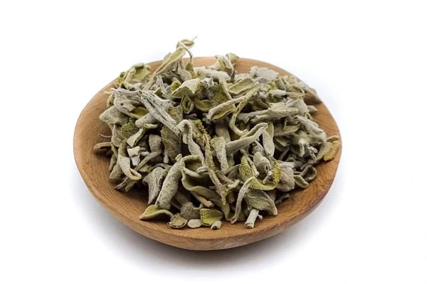
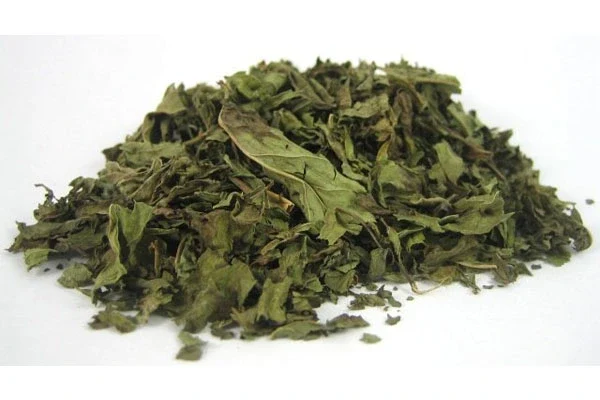
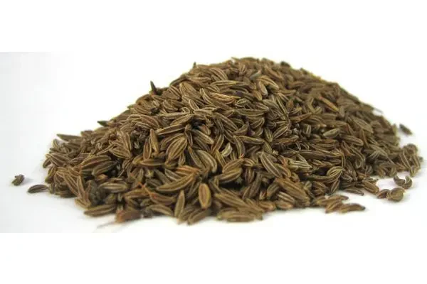

Lemongrass
A citrus-scented botanical for herbal infusions and flavor blends.
Ingredient profile ↗Explore botanical ingredients listed for tea & infusions. Discuss application suitability, grade and specifications with the export team.
Suitability is subject to the intended formulation, technical specification and applicable market requirements.
A citrus-scented botanical for herbal infusions and flavor blends.
Ingredient profile ↗
An aromatic leaf ingredient for savory blends and herbal infusions.
Ingredient profile ↗
A mint ingredient with a cooling aromatic profile for infusion and flavor applications.
Ingredient profile ↗
A distinctive aromatic leaf for savory blends and infusions.
Ingredient profile ↗
A mint ingredient for infusions and flavor applications; confirm species and grade.
Ingredient profile ↗
A botanical flower ingredient for infusion blends. Buyers should specify the desired form and cut size.
Ingredient profile ↗
A botanical flower ingredient for selected infusion and ingredient applications.
Ingredient profile ↗
A tart botanical ingredient for herbal infusions and beverage formulations.
Ingredient profile ↗
An aromatic seed ingredient for seasoning, baking and infusion blends.
Ingredient profile ↗
An anise-like aromatic ingredient for flavor blends; confirm the plant part and form.
Ingredient profile ↗
An aromatic ingredient for infusions and bakery flavor blends.
Ingredient profile ↗
A dried citrus ingredient for flavor blends. Confirm drying method and required form.
Ingredient profile ↗
A botanical root ingredient for flavor and infusion applications; confirm identity and requirements.
Ingredient profile ↗
A lemon-scented botanical for infusion blends.
Ingredient profile ↗